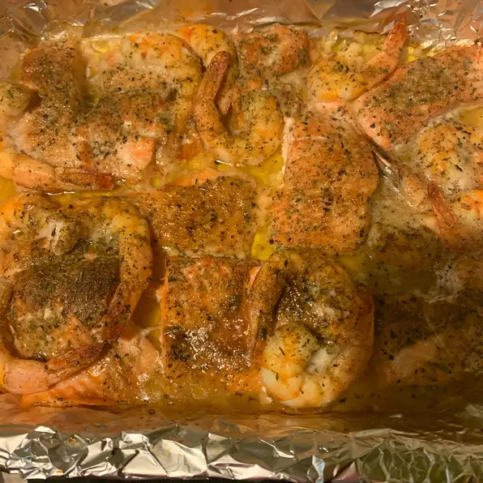

Candied Salmon

This is a recipe that I used on other fish
and decided to try it on salmon.
Even my husband likes it and he is not a salmon fan.
Ingredients
- Some butter
- 1 clove of garlic
- 4 ounce of salmon
- 3 large onions
- 1 cup of white vinegar
- 1 cup of brown sugar
Steps
- Preheat the oven to 350 degrees F (175 degrees C).
Line a baking sheet with aluminum foil,
and grease the foil with cooking spray.
- Combine the onions, vinegar and brown sugar
in a saucepan over medium heat. Cook, stirring
occasionally until the sauce begins to caramelize,
about 15 minutes.
- Melt butter with garlic in a small skillet over medium
heat. Lay salmon fillets on the prepared baking sheet,
and brush with garlic butter. Pour the onion mixture over
the fillets.
- Bake for 20 to 25 minutes in the preheated oven, until
the fish flakes easily. Cooking time may vary with the
thickness of your fillets.